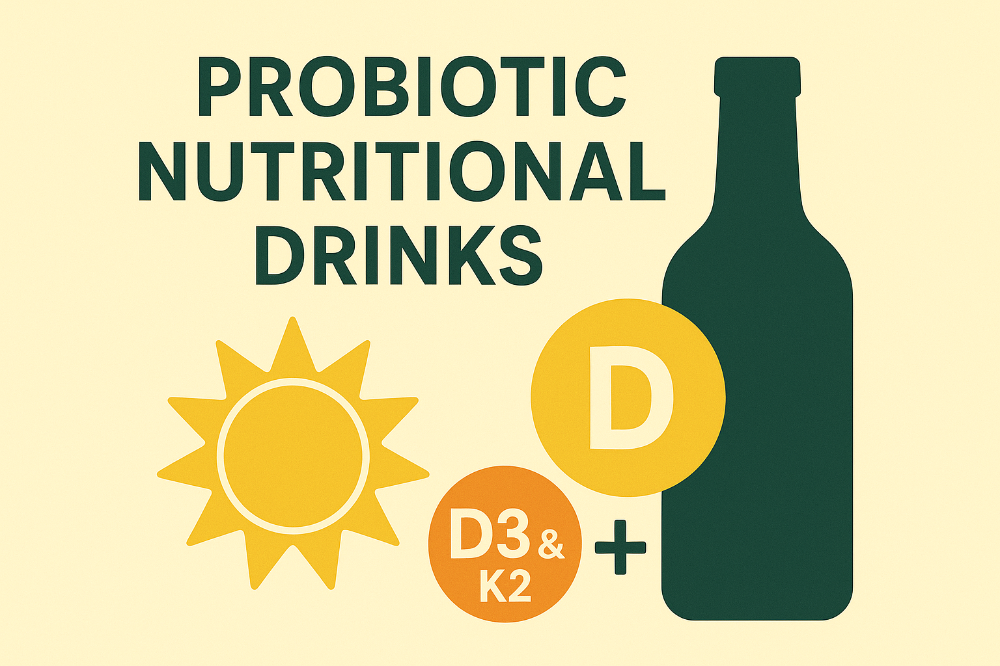
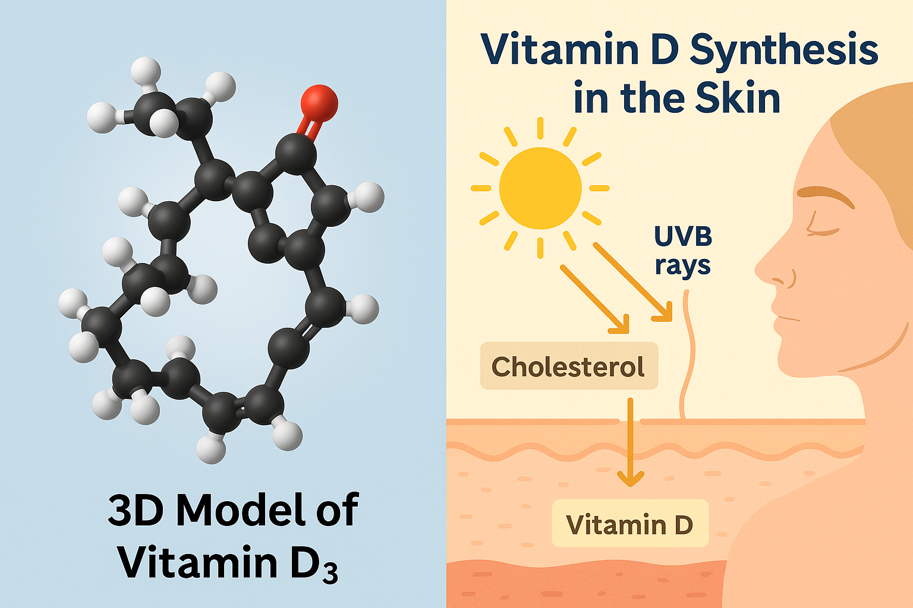
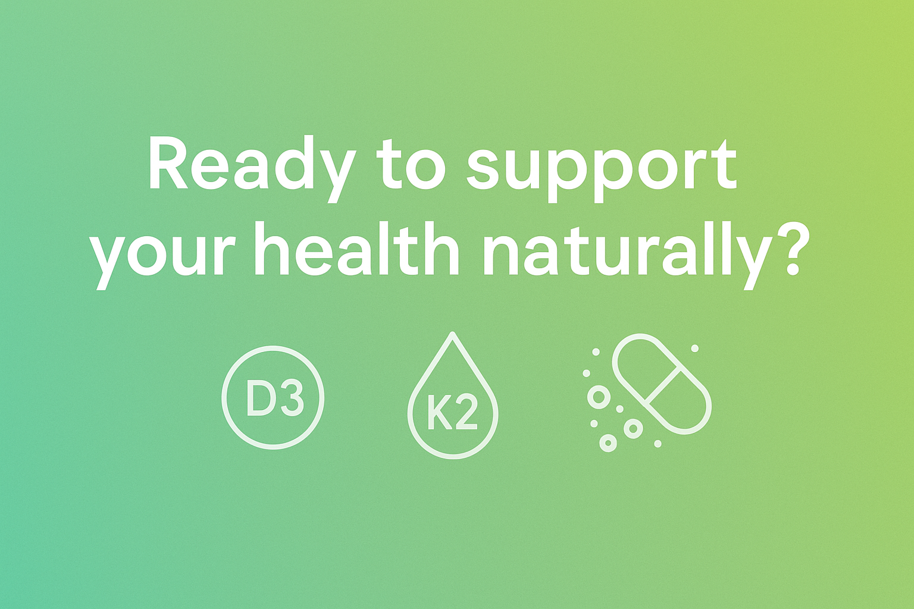

At ProLife Global Health Ltd (活之寶環球健康有限公司), we fuse cutting-edge probiotic science with a deep commitment to whole-body vitality. Our Probiotic Nutritional Drinks (益生菌營養液) are more than just refreshments—they're daily essentials that elevate immunity and awaken natural balance from within. Crafted for those who crave wellness without compromise, every sip is rooted in evidence-based microbiome research and inspired by nature, perfected through innovation. Because good health isn't just a goal—it’s a lifestyle. Refresh yourself from the inside out.
Vitamin D is a fat-soluble nutrient essential for:
Deficiency symptoms include:
Over 1 billion people globally are deficient in vitamin D. It’s vital to assess your symptoms and consider supplementation, especially if you're in a high-risk group.
You may be at risk of Vitamin D deficiency if you:
These factors limit natural vitamin D production or absorption, making supplements a helpful solution.
Vitamin D3 helps absorb calcium, but Vitamin K2 ensures it reaches the bones and not your arteries. When taken together, they:
Without K2, calcium absorbed via D3 may accumulate in soft tissues, increasing the risk of heart disease. This synergy is especially important for aging individuals and those with chronic conditions.
Use this formula to determine your daily Vitamin D dosage:
Examples:
Most supplements come in 1,000, 5,000, or 10,000 IU doses. Adjust accordingly based on your needs and consult a health provider when necessary.
Don’t forget: Vitamin D is fat-soluble. Always take it with:
You likely need supplementation if you:
Sunlight is ideal (30 mins midday exposure), but for many, it’s not enough. Supplements are a safe and effective alternative to maintain optimal health.
Start with Vitamin D3 + K2 + Magnesium for best results. Addressing this trio ensures calcium goes to your bones—not your arteries.
Vitamin D deficiency is linked to numerous chronic diseases. Correcting it, alongside K2 and magnesium, can improve immunity, bone density, heart health, and mood.
This content is inspired by Susan Ryan’s book, “Defend Your Life II”, which outlines a wellness protocol to reverse illness through nutrient optimization.
🧾 References:

This infographic combines the molecular structure of Vitamin D₃ with a step-by-step visual of how your skin produces it when exposed to UVB sunlight. It highlights why sun exposure and nutrient absorption are both critical for health.
Vitamin D3, also known as cholecalciferol, is the most biologically active form of vitamin D. It plays a crucial role in:
Since Vitamin D3 is naturally synthesized in the skin through sun exposure, people in colder climates or those who spend most of their time indoors may need supplements or dietary sources such as:
Recent research also shows that individuals with adequate vitamin D levels are less likely to suffer severe respiratory infections, including complications from COVID-19, and may experience better mood regulation and metabolic health.
While Vitamin D3 helps absorb calcium, Vitamin K2 ensures that calcium is properly utilized, preventing it from accumulating in arteries and soft tissues. Vitamin K2 is responsible for:
Food sources of Vitamin K2 include:
Because both D3 and K2 are fat-soluble and work synergistically, combining them can help optimize their benefits and reduce potential side effects of supplementation.
The D3-K2 synergy ensures calcium is absorbed efficiently and placed in the right areas, reducing the risk of arterial calcification while improving bone strength. Without K2, excess calcium from D3 may accumulate in arteries, increasing cardiovascular risks.
Scientific studies suggest that combining D3 and K2 leads to:
This combination supports long-term skeletal, cardiovascular, and immune system function—especially important as we age or face health challenges such as diabetes and chronic inflammation.
While food sources provide some D3 and K2, many people benefit from supplements, especially if they:
Our Probiotic Nutritional Drinks (益生菌營養液飲料) are crafted to help support optimal nutrient absorption—including fat-soluble vitamins like D3 and K2. By nourishing the gut microbiome, they enhance how the body utilizes vitamins and minerals, making supplementation more effective and holistic.
Vitamin D3 and K2 work hand-in-hand, making them essential for long-term health. Whether obtained from food, sun exposure, or supplements, prioritizing these nutrients supports strong bones, a healthy heart, and overall well-being.
At ProLife Global Health Ltd, we believe in a whole-body wellness approach. Our science-backed Probiotic Nutritional Drinks don’t just refresh—they help your body absorb and optimize vital nutrients, including D3 and K2. With every sip, you’re not only supporting your immune system but empowering your body to thrive from the inside out.
